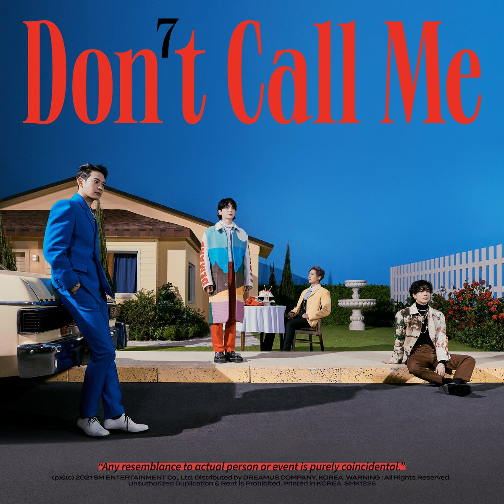

Sobre o site
Se você gosta de música pop, veio ao lugar certo. Nossa loja virtual foi criada com o intuito de promover o trabalho musical do grupo sul-coreano Shinee. Procuramos mostrar um breve review da carreira e discografia dos artistas, apontando sempre os impactos que seus feitos causaram no cenário da música pop coreana.
SHINee's Back: Novo álbum "Don't Call Me"
Nosso destaque atual é o álbum mais recente do SHINee, intitulado “Don’t Call Me”. Lançado em 22 de fevereiro de 2021, após um hiatus de 3 anos, o 7° álbum do grupo traz suas verdadeiras cores de maneira forte e impactante.
Sentimos que Don't Call Me era a faixa perfeita porque também mostra nossa performance. Isso era algo que realmente queríamos fazer. SHINee é um grupo que sempre tenta algo novo
- Minho, SHINee
O álbum possui duas versões diferentes: A versão Fake Reality e a versão Reality. Cada uma das versões possui um CD, photobook e vários outros itens. Para mais detalhes, cheque a tabela abaixo.
Tracklist
- Don't Call Me
- Heart Attack
- Marry You
- Code
- I Really Want You
- Kiss Kiss
- Body Rhythm
- Attention
- Kind
| Item | Dimensões (em mm) |
|---|---|
| Photoook | 220x294 |
| CD-R | - |
| Envelope | 155x215 |
| Lyrics Paper | 290x410 |
| Pôster dobrado sortido | 290x410 |
| Postcard sortido | 175x125 |
| Pôster sortido | 920x610 |
| Phonecard sortido | 175x125 |
| Slide Film | 70x70 |
| Photocard sortido | 55x85 |